Generate publication-quality pedigree diagrams from standard genetics pedigree files
v1.0.0rc2The web app runs pypedigree in the browser (with Pyodide): paste, drop or open a pedigree file, choose the options, and save an interactive SVG, an SVG for print or a PNG. The file is drawn on your computer and never uploaded. It has every option of a style file, but not the circular layout, PDF output, or separate phenotype and annotation files.
pip install pypedigreepip install pypedigree[pandas]git clone https://github.com/bourgeron-lab/pypedigree.git
cd pypedigree
uv sync --extra devimport pypedigree does not import matplotlib: it is loaded on the first PNG/PDF render. Parsing, layout and SVG output (render_interactive_svg, render_svg, --interactive) never load it, so a web server using them avoids its import time and pyplot's global state.
# Render a pedigree file to PNG
pypedigree family.ped -o output.png
# Display interactively
pypedigree family.ped --show
# Render specific family at high resolution
pypedigree family.ped --family FAM1 --dpi 300 -o family1.svg
# One file per family: figures/FAM1.svg, figures/FAM2.svg...
pypedigree cohort.ped --output-dir figures/ --format svgfrom pypedigree import parse_pedigree, render_pedigree
ped = parse_pedigree("family.ped")
fig = render_pedigree(ped, output="output.png")from pypedigree import PedigreeBuilder
builder = PedigreeBuilder("FAM1")
builder.add_individual("father", sex="male")
builder.add_individual("mother", sex="female")
builder.add_individual("child", sex="male",
father="father", mother="mother",
phenotype="affected")
fig = builder.render(output="trio.png")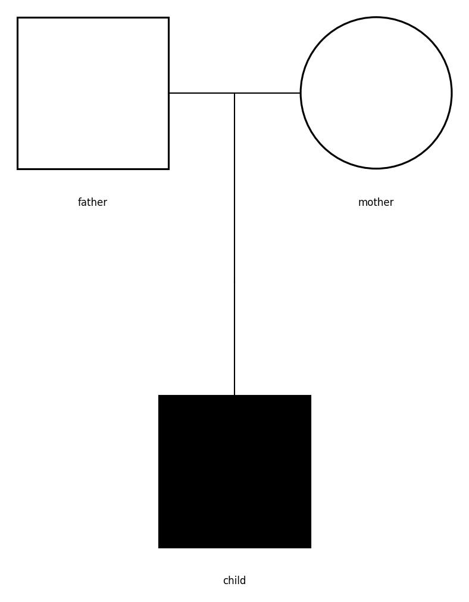
pypedigree reads tab-, comma-, or space-separated pedigree files. The separator is auto-detected. Files are read as UTF-8 on every platform, Windows included; a byte order mark (Excel's “CSV UTF-8”) is ignored, and a file in another encoding is a parse error asking to save it as UTF-8.
When a header row is present, columns are matched by name, not by position. This means you can arrange columns in any order, and any column that doesn't match a known structural name is automatically treated as a phenotype column.
The parser recognises multiple aliases for each structural column:
| Role | Accepted Aliases |
|---|---|
| Family ID | FID, family_id, Family |
| Individual ID | ID, IID, sample_id, Individual |
| Father | Father, Pat, Dad, paternal_id |
| Mother | Mother, Mat, Mom, Mum, maternal_id |
| Sex | Sex, Gender |
| Phenotype | Phenotype, Pheno, Affected |
| Column | Name | Description | Values |
|---|---|---|---|
| 1 | family_id | Family identifier | Any string |
| 2 | sample_id | Individual identifier (unique within family) | Any string |
| 3 | paternal_id | Father's sample_id | ID or 0 if unknown |
| 4 | maternal_id | Mother's sample_id | ID or 0 if unknown |
| 5 | sex | Biological sex | 1=male, 2=female, 0=unknown |
| 6 | phenotype | Affected status | 1=unaffected, 2=affected, 0=unknown |
A not_sampled column (aliases inferred, unsampled, dummy; 1, yes or true) marks individuals who have a row but were never sampled, such as the “dummy” parents that link real members: they are drawn with a dashed outline like a phantom, but keep their label, parents, phenotypes and their place in a .fam export.
A parent named in the father or mother column but with no row of their own is drawn as a phantom: dashed outline, labelled with that ID, sex from the role, and a PedigreeDataWarning says so. A child with only one parent given gets an unlabelled phantom for the other. Either way the child hangs from both parents, as with PedigreeBuilder; a .fam export leaves phantoms out.
FAM1 father 0 0 1 1
FAM1 mother 0 0 2 1
FAM1 child father mother 1 2| Column | Name | Description | Values |
|---|---|---|---|
| 7 | date_of_birth | Birth date | YYYYMMDD, YYYYMM, or YYYY |
| 8 | twins | Twin relationships | TYPE:sibling_id (comma-separated) |
| 9 | deceased | Vital status | 1=deceased, 0=alive |
| 10 | proband | Index case | 1=proband, 0=not |
| 11 | carrier | Carrier status | 0=not carrier, 1=carrier (heterozygous), 2=obligate carrier. Per-gene status: cr_ columns, see Carrier Notation |
Standard notation — pregnancies and pregnancy losses, adoption, childlessness, gamete donors and surrogates, gender identity, the consultand — has its own named columns, see Standard Notation.
carrier column requires a header row to be present. When using inline phenotypes (columns 12+), the carrier column must appear before the phenotype columns.
MZ = monozygotic (identical), DZ = dizygotic (fraternal), TW = unknown zygosity.
Example: MZ:sibling_id
When a header row is present, columns 11 and beyond are parsed as additional phenotype values. Column names from the header define phenotype names.
family_id sample_id father mother sex pheno dob twins deceased proband epilepsy IQ SRS
FAM1 father 0 0 1 1 0 0 0 0 0 110 12
FAM1 mother 0 0 2 1 0 0 0 0 1 95 25
FAM1 son father mother 1 2 0 0 0 1 1 85 40
FAM1 daughter father mother 2 1 0 0 0 0 0 120 81=unaffected, 2=affected, 0=unknown and -9=no data are properly handled in extra phenotype columns, following the same convention as the main phenotype columnband_text)., NA, NaN, -9, empty): grey band reading “NA” (the grey of 0=unknown, told apart by the text); a single centred “NA” when every band of the symbol has no data. The text can be turned off with show_na_labels / --no-na-labelsN/A, not_applicable, case-insensitive): the phenotype cannot apply to the individual (ovarian cancer for someone assigned male at birth). The band or quadrant is white, as for unaffected, with no text; the SVG tooltip says “not applicable”. It is not data (no part in a gradient’s range); NA keeps meaning no data. It is read in cr_ carrier columns too. With pandas, read the file with keep_default_na=False, na_values=["NA", ""], or read_csv turns N/A into no data.a_ prefix columns are annotation columns (text below IDs, not phenotypes)gi_ prefix for gradient inverted (color→white, for metrics where low = bad)cr_ prefix for carrier status of one gene or condition (0/1/2), drawn as a patterned section, see Carrier Notation0,712 is accepted as 0.712show_phenotype_labels style option or the --show-phenotype-labels CLI flag.
By default (since 0.5.0) each symbol is cut in four, one quadrant per phenotype column or cr_ carrier source, up to four. With more, the default "phenotype_layout": "auto" draws horizontal bands instead; --phenotype-layout quadrants does the same with a warning, and --phenotype-layout bands (the default before 0.5.0) always draws one band per column. Carrier sources alone, with no phenotype column, are drawn as with bands, and so is a single phenotype column under "auto": it fills the whole symbol, as NSGC draws one condition. A quadrant shows the same codes as a band; a gradient value is written alone. The legend starts with a key, a square and a circle cut in four with the column names around them. Since the key gives each column's color, the binary columns then share one Affected / Unaffected / Unknown row whose first swatch is striped with their colors ("legend": "compact", the default with quadrants; "full" gives one row per column).
Autism (Autism, ASD, TSA), ADHD (ADHD, TDAH), intellectual disability (ID, DI) and epilepsy columns are recognised by name, whatever their prefix, case or order, and take the top-left, top-right, bottom-left and bottom-right quadrants; other columns take the free quadrants in column order, and phenotype_quadrants places any column, e.g. {"IQ": "bottom-right"}. In both layouts these four phenotypes are drawn in conventional colors by default: autism blue #386eb2, intellectual disability red #d34436, ADHD yellow #e59635, epilepsy purple #5e287e; phenotype_colors overrides them.
pypedigree family.ped --phenotype-layout bands -o family.png # horizontal bands insteadExtra phenotypes can also be supplied via a separate TSV file with the --pheno CLI flag:
sample_id epilepsy IQ SRS
father 1 118 45
mother 1 92 78
child 2 105 62Rows are matched to the pedigree by sample_id. Sample IDs that match no individual are listed in a warning (PedigreeDataWarning, Warning: … on the CLI) and their values are ignored; an individual with no row is drawn with “NA” bands.
pypedigree PEDIGREE_FILE [OPTIONS]| Option | Description | Default |
|---|---|---|
-o, --output PATH | Output file path (format from extension: .png, .svg, .pdf) | None (display) |
--export PATH | Also write the pedigree as .fam (PLINK) or .json (GA4GH Phenopackets Pedigree): the six PED fields only. Alone, nothing is drawn | None |
--format FORMAT | Force output format: png, svg, pdf | Auto-detect |
--family ID | Render only this family | All families |
--output-dir DIR | One file per family in DIR, named after the family ID (FAM1.png; .svg with --interactive), with the colors and legend of the whole file. IDs are made safe for file names; two IDs giving the same name get _2, _3… A family that fails is reported, the others are written, and the exit code is 1. Not with -o or --show | — |
--dpi INT | Output resolution in DPI | 150 |
--show | Display interactively (matplotlib window) | Off |
--style PATH | JSON file with PedigreeStyle overrides | None |
--separator SEP | Force separator: tab, comma, space | Auto-detect |
--pheno PATH | Separate .pheno TSV file for extra phenotypes | None |
--annotations PATH | Separate TSV file with annotation text (displayed below individual IDs) | None |
--outline-color COLOR | Shape outline color (e.g. grey, #888) | black |
--carrier-notation [nsgc2022|legacy] | Carrier notation: patterned sections (NSGC 2022) or half-fill and center dot | nsgc2022 |
--min-font-size PT | Smallest size of any text, in points (style min_font_size; e.g. 6 for journals) | None |
--text-scale X | Text and marks X times larger relative to the symbols (style text_scale): the layout keeps room for them | 1.0 |
--no-labels | Hide sample ID labels under shapes | Off |
--sibling-order [auto|birth] | Siblings by date of birth, then file order, except where a loop is closed by moving a child to the end of their sibship (auto), or strictly in that order, loops drawn with a duplicate instead (style sibling_order) | auto |
--loops [duplicate|cross] | A loop that would stretch a sibship line over another: one partner drawn twice, joined by a dotted line (duplicate), or once, the lines crossing with a small hop (cross; style loops) | duplicate |
--labels [id|generation|both] | Label with the sample ID, the NSGC number from the drawing (generation in Roman numerals, position from the left: I-1, II-3), or the number with the ID under it (style labels) | id |
--ptdt | Compute each child’s pTDT deviation from its parents’ PGS columns (style pgs_transmission; SD from ptdt_midparent_sd, √½ by default) | Off |
--hpo-features | For a Phenopackets Family: each HPO term of its phenopackets as a binary column | Off |
--canrisk-names | For a CanRisk file: label individuals with its Name column, where given and unique in the family | Off |
--no-legend | Hide phenotype legend | Off |
--show-phenotype-labels | Show YES/NO text inside binary phenotype bands (hidden by default) | Off |
--phenotype-layout | auto (quadrants for two to four phenotypes, the whole symbol for one, bands beyond), quadrants (the symbol cut in four, one quadrant per phenotype, up to four) or bands (horizontal bands) | auto |
--pgs-scale | PGS position: zscore, minmax over the pedigree (raw scores) or percentile (fixed scales mark ±2 SD); a warning when a PGS column drawn as z-scores does not look like them (a value beyond ±5, every value within ±0.05, or, from 3 values, a mean beyond ±2) | zscore |
--show-pgs-values | Write each PGS value beside its marker (style show_pgs_values) | Off |
--no-na-labels | Do not write “NA” in bands with no data (they stay grey, like unknown) | Off |
--plink | Treat input as PLINK .ped file (ignore genotype columns after column 6) | Off |
--interactive | Generate interactive SVG with tooltips, click highlighting, and zoom/pan (same bands, legend and PGS curves as the PNG; not with --circular) | Off |
--no-script | With --interactive: the same SVG without script or tooltip, for print or for a page that adds its own behaviour (render_svg()) | Off |
--id-prefix PREFIX | With --interactive: prepend PREFIX to every id in the SVG, so several figures can share one page | — |
--responsive | With --interactive: width="100%" and no height, so the figure fills its container's width | Off |
--circular | Use circular/radial layout with founders at centre, descendants on concentric rings (experimental: how it looks may change in a 1.x release) | Off |
--version | Show version and exit | — |
# Basic rendering
pypedigree family.ped -o pedigree.png
# SVG with custom DPI and no labels
pypedigree family.ped -o pedigree.svg --dpi 300 --no-labels
# With external phenotype file and custom style
pypedigree family.ped --pheno phenotypes.tsv --style custom.json -o result.pdf
# Grey outlines for a cleaner look
pypedigree family.ped --outline-color grey -o pedigree.png
# Interactive SVG with tooltips and click highlighting
pypedigree family.ped --interactive -o pedigree.svg
# Show YES/NO labels in binary phenotype bands
pypedigree family.ped --show-phenotype-labels -o pedigree.png
# Read a PLINK .fam file (auto-detected from extension)
pypedigree family.fam -o pedigree.png
# Read a PLINK .ped file (use --plink to ignore genotype columns)
pypedigree family.ped --plink -o pedigree.pngparse_pedigree(file_path)Parse a pedigree file (.ped) into a Pedigree object.
from pypedigree import parse_pedigree
ped = parse_pedigree("family.ped")
for fam_id, family in ped.families.items():
print(f"{fam_id}: {len(family.individuals)} individuals")parse_pedigree_from_string(text)Parse pedigree data from a string (useful for testing or embedded data).
from pypedigree import parse_pedigree_from_string
data = """FAM1\tfather\t0\t0\t1\t1
FAM1\tmother\t0\t0\t2\t1
FAM1\tchild\tfather\tmother\t1\t2"""
ped = parse_pedigree_from_string(data)parse_pedigree_from_dataframe(df)Parse from a pandas DataFrame. Requires pip install pypedigree[pandas].
The DataFrame is read as a pedigree file would be. When its first column is named like a
family ID column (FID, family_id, family) or another
known header name, the column names are the header: columns are matched by name, and
phenotype, PGS, annotation and notation columns are drawn. Columns named 0, 1, 2...
(header=None) are read by position, the first ten only. NaN is a missing value,
never 0.
import pandas as pd
from pypedigree import parse_pedigree_from_dataframe
# a file with a header: FID, IID, PAT, MAT, SEX, PHENO, b_autism, PGS_autism...
df = pd.read_csv("family.ped", sep="\t")
ped = parse_pedigree_from_dataframe(df)
# no header: columns by position
df = pd.read_csv("family.fam", sep="\t", header=None)
ped = parse_pedigree_from_dataframe(df)parse_phenotype_file(file_path)Parse a separate phenotype TSV file.
from pypedigree import parse_phenotype_file, apply_phenotypes_to_pedigree
pheno_data, pheno_names = parse_phenotype_file("phenotypes.tsv")
apply_phenotypes_to_pedigree(ped, pheno_data, pheno_names)parse_annotation_file(file_path)Parse an external annotation TSV file. First row is a header (sample_id, ann1, ann2, ...), subsequent rows contain text values.
from pypedigree import parse_annotation_file, apply_annotations_to_pedigree
ann_data, ann_names = parse_annotation_file("annotations.tsv")
apply_annotations_to_pedigree(ped, ann_data, ann_names)render_pedigree(pedigree, ...)Render all families in a pedigree. Returns a matplotlib Figure.
from pypedigree import parse_pedigree, render_pedigree, PedigreeStyle
ped = parse_pedigree("family.ped")
style = PedigreeStyle(dpi=300)
fig = render_pedigree(ped, style=style, output="high_res.png")render_family(family, ...)Render a single Family object. Returns (Figure, FamilyLayout).
from pypedigree import parse_pedigree, render_family
ped = parse_pedigree("family.ped")
family = list(ped.families.values())[0]
fig, layout = render_family(family)
fig.savefig("family.png", dpi=150, bbox_inches="tight")render_interactive_svg(pedigree, ...)Render all families as an interactive SVG with tooltips, click highlighting, and zoom/pan. Returns the SVG markup as a string. Draws the same figure as render_pedigree(). No additional dependencies required.
url(#…) and href="#…" references), so several figures can share a page. Letters, digits, _, -, ., starting with a letter or _; otherwise ValueError.width="100%" and no height, keeping the viewBox: the figure fills its container's width.from pypedigree import parse_pedigree, render_interactive_svg
ped = parse_pedigree("family.ped")
svg_str = render_interactive_svg(ped, output="interactive.svg")render_svg(pedigree, ...)The same drawing without script and without the tooltip group, for a printed report or for a page that adds its own behaviour. Each individual keeps its <title> and its data-* attributes. Same arguments as render_interactive_svg().
render_families(pedigree, output_dir, ...)Draw each family into its own file in output_dir (created if needed) and return a dict of family ID → Path. Every family has the colors, column modes and legend of the whole pedigree, so the figures of a cohort can be compared. The CLI's --output-dir. File names come from family_file_names(ids): other characters than letters, digits, -, _ and . become _, Windows device names get a _, and two IDs giving the same name (ignoring case) get _2, _3… with a warning.
"png", "pdf" or "svg" (matplotlib's SVG). Ignored with interactive.KeyError for an unknown ID.render_pedigree(). The style is checked once, before anything is drawn.render_interactive_svg()'s SVG (matplotlib is not imported); with script=False, render_svg()'s. id_prefix and responsive as there.A family that fails does not stop the others: once all are drawn, PedigreeBatchError is raised, with .written and .failures (family ID → message). Figures are closed as they are saved.
from pypedigree import parse_pedigree, render_families
ped = parse_pedigree("cohort.ped")
files = render_families(ped, "figures", fmt="svg")compute_layout(family, style, *, labels=True)Compute layout coordinates without rendering. Returns a FamilyLayout with node positions and edge geometry. With labels=True (what the renderers pass when labels are shown), neighbours whose labels would overlap are moved apart by the room the labels need: long IDs, a large font_size or long annotations no longer run into each other.
from pypedigree import compute_layout, PedigreeStyle
layout = compute_layout(family, PedigreeStyle())
for node in layout.nodes:
print(f"{node.individual_id}: x={node.x:.1f}, y={node.y:.1f}")compute_layout_circular(family, style)Compute circular/radial layout coordinates. Founders sit at the centre and each later generation on its own concentric ring, in the left-to-right order of the hierarchical layout wrapped around the circle. The circular layout therefore inherits its guarantees: siblings stay together, sibship arcs of different couples never overlap, partners sit side by side, and tangled loops are drawn with duplicated individuals.
from pypedigree import compute_layout_circular, PedigreeStyle
layout = compute_layout_circular(family, PedigreeStyle())
for node in layout.nodes:
print(f"{node.individual_id}: x={node.x:.1f}, y={node.y:.1f}")base_radius is expanded automatically when a ring would be too
crowded for the shapes to fit, so nodes never overlap. Shapes stay upright: a
square turned to face outward would read as the unknown-sex diamond, and
phenotype bands stay horizontal as in the hierarchical layout. ID labels are
set outside each shape, away from the lines arriving from the centre, on a white
backing: radially outward, or, where a line, a shape or another label is in the
way, turned aside to the first free direction. The labels are placed when the
figure is drawn, at its final size, so they also stay clear when the figure is
resized after rendering. Twins hang from one point of the sibship arc, as a V with
a bar for MZ twins, and duplicates are joined to their original by a dotted
arc.
The PedigreeBuilder provides a fluent interface for constructing pedigrees programmatically,
without writing .ped files. All methods return self for method chaining.
PedigreeBuilder(family_id="FAM1")Create a new builder with a default family ID.
add_individual(sample_id, ...)Add an individual to the pedigree.
"male", "female", "unknown" (or "m", "f", "u", "1", "2", "0")."affected", "unaffected", "unknown"."P", "SAB", "TOP", "ECT" or "SB", see Standard Notation."in" (father/mother are the adoptive parents) or "out"."choice" or "infertility"."D" gamete donor or "S" surrogate."man", "woman" or "nonbinary": the symbol follows it, and sex is the sex assigned at birth.True draws an asterisk at the lower right; text is the result, written below.data-* attributes on that node, e.g. {"qc": "high"} → data-qc="high"."MZ" monozygotic, "DZ" dizygotic or "TW" zygosity unknown.add_twins(sample_ids, twin_type="TW")Declare a group of twins (or triplets) of one zygosity, as the twins column does: every member is recorded as the twin of every other, and the individuals may be added before or after. A twin never added, twins in different families or not sharing their parents give a PedigreeDataWarning at build().
builder.add_twins(["S7", "S8"], "MZ")add_union(partner1, partner2, ...)Explicitly add a union between two individuals. Unions are auto-inferred from parent references, so this is only needed for childless couples or to set consanguinity/broken flags.
set_style(style)Set a custom PedigreeStyle for rendering.
build() → PedigreeBuild a Pedigree object from added individuals. Auto-infers unions and creates phantom parents, as the parser does: a parent named but not added becomes a phantom with that ID, and a child with only one parent gets an unlabelled phantom for the other.
render(output=None, ...) → FigureBuild and render in one step. Auto-assigns phenotype colors if not set.
render_interactive_svg(output=None) → strBuild and render as an interactive SVG. Returns the SVG markup as a string.
If output is provided, the SVG is also written to that file path.
See the Interactive SVG section for details.
render_svg(output=None) → strBuild and render as a static SVG (no script, no tooltip). Both take
id_prefix= and responsive=.
from pypedigree import PedigreeBuilder
builder = PedigreeBuilder("FAM1")
# Generation 1: founders
builder.add_individual("gf", sex="male")
builder.add_individual("gm", sex="female")
# Generation 2
builder.add_individual("father", sex="male", father="gf", mother="gm")
builder.add_individual("mother", sex="female")
# Generation 3 with phenotypes
builder.add_individual("child1", sex="male",
father="father", mother="mother",
phenotype="affected", proband=True,
phenotypes={"IQ": 85, "epilepsy": 1})
builder.add_individual("child2", sex="female",
father="father", mother="mother",
phenotypes={"IQ": 120, "epilepsy": 0})
fig = builder.render(output="family.png")The builder has built-in Jupyter support via _repr_png_. Simply evaluate a builder cell to see the pedigree inline:
builder # Displays the pedigree diagram inlinepypedigree can display multiple phenotypes per individual, each in a quadrant of the symbol (the default, up to four) or in a horizontal band, as a color or a gradient fill.
| Type | Values | Rendering |
|---|---|---|
| Binary | 0 or 1 | Empty (0) or filled (1) color band |
| Continuous | Numeric > 1 | Color gradient: white (min) → full color (max) |
| PGS | Any numeric | Upright Gaussian distribution curve, peak to the left (to the left of the shape, or right of a right-hand partner) |
| Missing | ., NA, NaN, -9, empty | Grey band reading “NA” |
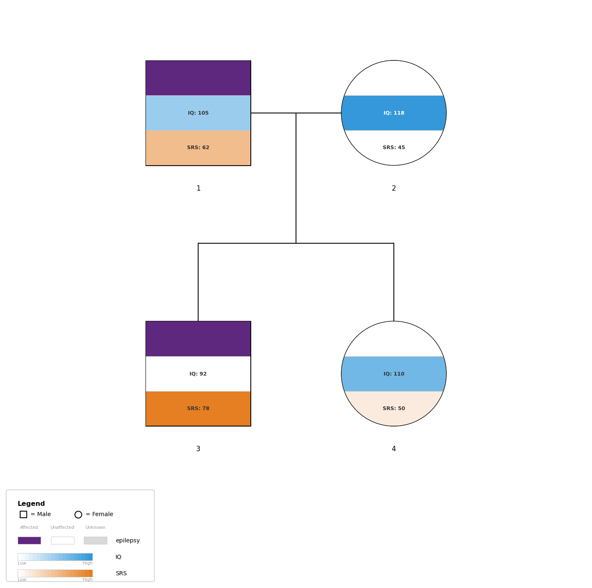
// style.json
{
"phenotype_colors": {
"epilepsy": "#e74c3c",
"IQ": "#3498db",
"SRS": "#e67e22"
}
}pypedigree family.ped --style style.json -o output.pngstyle = PedigreeStyle()
style.phenotype_colors = {
"epilepsy": "#e74c3c",
"IQ": "#3498db",
"SRS": "#e67e22",
}
fig = render_pedigree(ped, style=style)Columns without a color in phenotype_colors get one from the default
palette, by their position among the columns, also when other columns have one. A color
that repeats one already in the figure (a known phenotype's, or one you chose), or looks
like it, is replaced by the next distinct one, from the palette then brown, light magenta
and olive: two outlines or bands never look alike. This happens for every entry point — the CLI, render_pedigree()
and PedigreeBuilder — via resolve_style(), so all three
produce the same figure for the same input.
When a column is named PGS (case-insensitive), it is rendered as a vertical Gaussian curve to the left of each individual's shape, instead of a band. The curve's position along the x-axis reflects the PGS value relative to other individuals.
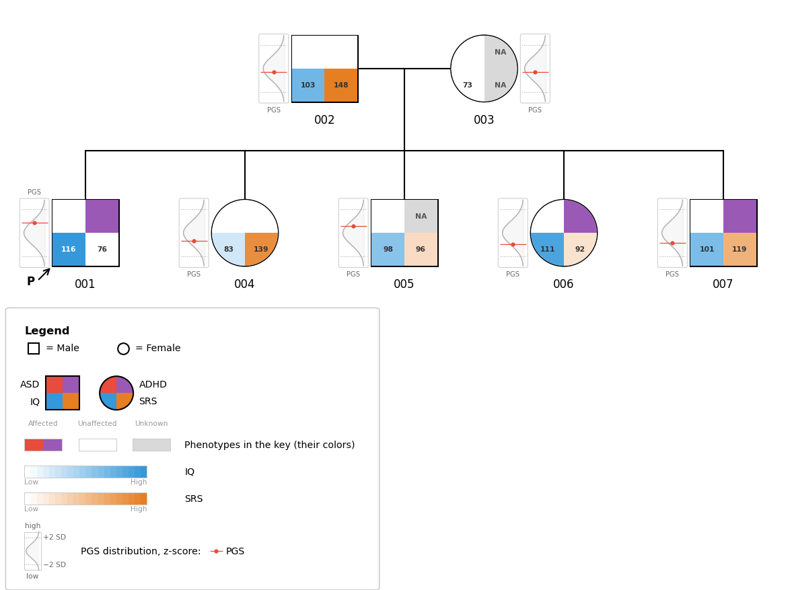
By default (--pgs-scale zscore, style "pgs_scale": "zscore", since 0.10.0) each value is a z-score placed on the drawn standard normal, the same for every pedigree; with --pgs-scale percentile it is a population percentile (0–100). With --pgs-scale minmax a value is placed between the pedigree's lowest and highest score instead (for raw scores), so in a trio with +2.5, −0.2 and +1.1 the parent at the 42nd percentile sits at the bottom of the curve. On these fixed scales the ±2 SD tails are marked with dotted lines, the legend names the scale, and the SVG tooltip gives z and percentile (z = +1.10, 86th percentile). PGS curves are drawn even when the pedigree has no other phenotype column.
The legend's PGS row draws the curve's box as it stands beside a symbol: upright, peak on the left, “high” above it and “low” below it, and on the z-score and percentile scales the ±2 SD lines named on its right (since 1.0.0rc2; a small horizontal bell before). legend_text rewords them (pgs_high, pgs_low, pgs_plus_2sd, pgs_minus_2sd). It writes each score's name after a short line of its color with a dot in its middle, as the score is marked in the figure (“PGS distribution: –•– autism –•– ADHD”), so the markers can be told apart; phenotype_labels renames them ({"PGS_EA": "educational attainment"}).
A printed figure shows where a score sits on the curve, not its value. --show-pgs-values (style "show_pgs_values": true) writes each value beside its marker, in the marker's color, on the far side of the curve from the symbol: “+2.1” or “−0.4” on the z scale, the rounded percentile, or the value to three significant digits; close values are spread apart, and the symbols move apart to make room. Markers of different scores with close values have their dots set side by side, so none hides another.
Any column starting with PGS (case-insensitive) is treated as a PGS column. For example: PGS_autism, PGS_IQ, PGS_ADHD. All PGS columns share a single gaussian curve, with each trait's individual score marked by a thin solid line of its color across the box, with a dot of that color (since 1.0.0rc2; dashed before, which could be read as an interval). Colors are set via the pgs_colors style option. Without it, a single PGS column is red (#e74c3c) and several get distinct colors: a score named after a known phenotype (PGS_autism, PGS_ADHD, PGS_ID, PGS_epilepsy) takes that phenotype's color, the one its column has in the figure if there is one; the others take the first color unlike the other scores and the phenotype bands.
A column whose name starts with pTDT (case-insensitive, e.g. pTDT_autism) holds each child’s polygenic transmission deviation, (PGSchild − PGSmid-parent) / SD(PGSmid-parent) (Weiner et al. 2017). It is drawn with the PGS curve, always on the z scale, captioned “pTDT”; the legend has its own row and the tooltip reads “pTDT = +2.12”. Each kind of curve has its own box (since 1.0.0rc3): a child with both a PGS and a pTDT deviation, as with --ptdt, shows a PGS box and a pTDT box side by side (before, its pTDT only, with a warning). Give them in the file, or let pypedigree compute them (since 0.11.0): with pgs_transmission (--ptdt), each child whose two parents have a value of a PGS_* column gets (child − mid-parent) / ptdt_midparent_sd in a pTDT_* column (PGS_autism → pTDT_autism). SD(mid-parent) is a cohort quantity one family cannot estimate: √½ by default, the value for standardised scores and unrelated parents. A child missing a parent or a value gets none (its PGS box only); a pTDT_* column already in the file is drawn as given, with a warning. The parsed pedigree is not modified.
Since 1.0.0rc3 the curve is a way of drawing any normally distributed quantitative trait, not only a polygenic score. A column with the z_ prefix (z_IQ) gets a box of its own beside the symbol, captioned with its name (“IQ”), with a marker per value as for a PGS. Its values are z-scores; for values on another scale give the population's mean and SD with curve_reference:
{
"curve_reference": {"IQ": {"mean": 100, "sd": 15}},
"show_pgs_values": true
}The marker then goes at z = (value − mean) / SD, the value is written as it is (“115”) and the SVG tooltip reads “IQ: 115 (z = +1.00, 84th percentile)”. Without a reference, values that do not look like z-scores draw a warning, as PGS columns do. pgs_scale applies to PGS columns only.
Each kind of curve (PGS, pTDT, IQ…) has its own box. An individual with values of several kinds gets their boxes in a row, outward from the symbol, in column order (right of a right-hand partner), and the layout keeps room for the most boxes one individual has, so a figure where nobody has two kinds is spaced as before. A kind is a caption: curve_captions renames a box, and columns given one caption share one box, one marker each, as several PGS do ({"IQ_verbal": "IQ", "IQ_performance": "IQ"}). A column listed in curve_reference or curve_captions is drawn on a curve whatever its prefix. The legend has a row per kind, e.g. “IQ distribution (mean 100, SD 15)”, with the ±2 SD lines of that box's scale.
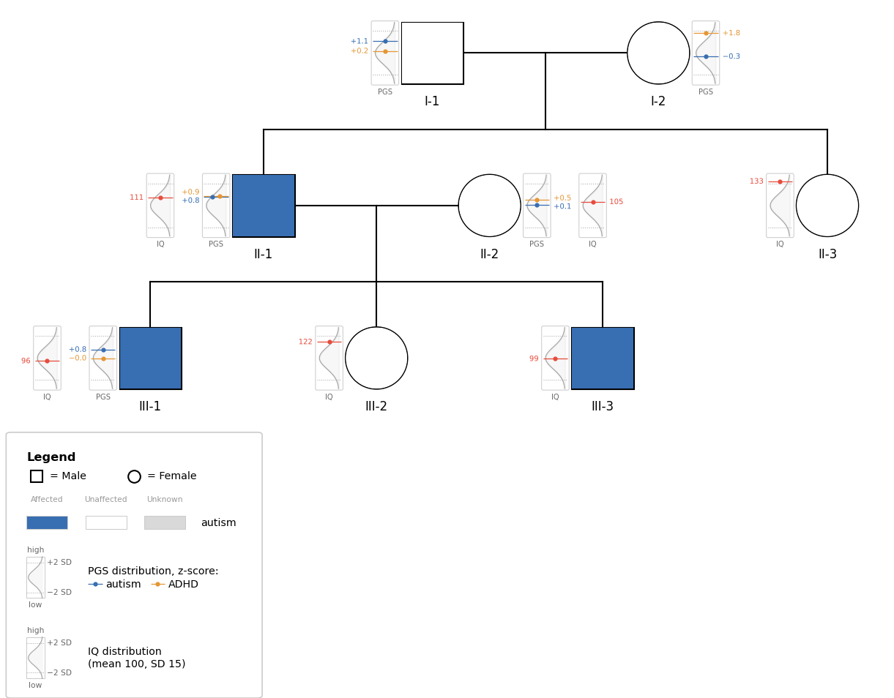
tests/data/phenotype/curve_traits.ped)By default, gradient values are normalized to [0,1] using the data's min/max. You can override this with the gradient_range style option to define fixed scales:
{
"gradient_range": {
"SRS": [40, 90]
}
}For phenotypes with a meaningful midpoint (e.g., IQ where 100 is average), use gradient_diverging to create a red→white→green scale:
{
"gradient_diverging": {
"IQ": {"min": 40, "mid": 100, "max": 160, "color_low": "#e74c3c", "color_high": "#2ecc71"}
}
}Values below the midpoint blend toward color_low, values above blend toward color_high, and the midpoint is white.
Each distinct value of a c_ column gets its own color, assigned in the
order the values appear in the file so the result is reproducible. The column's own
phenotype_colors entry is used for the first value; the remaining values
avoid both that color and the colors of the other phenotype columns, so two bands on
the same individual stay visually distinct. The legend lists exactly the values present
in the rendered pedigree.
When colors are auto-assigned, the following 8-color palette is used, then three extra colors when it runs short (brown #8c564b, light magenta #e377c2, olive #bcbd22):
| #e74c3c | #3498db | #e67e22 | #2ecc71 | #9b59b6 | #1abc9c | #f1c40f | #e91e63 |
By default, pypedigree auto-detects how to render each phenotype column (binary vs. continuous). You can override this behaviour by adding a prefix to the column name in the header row. The prefix is stripped from the display name in legends and labels.
| Prefix | Mode | Rendering | Use Case | |
|---|---|---|---|---|
b_ |
Binary | Color band when affected, white when unaffected, grey when unknown. No text by default. | Diagnoses, yes/no traits | |
g_ |
Gradient | White→color continuous gradient scale. Value labels shown inside band. | Quantitative scores (IQ, SRS, etc.) | |
o_ |
Outline | Colored shape border when affected, instead of a filled band. Does not consume band space. An individual affected in several o_ columns gets one border per column, inner first, in column order. |
Proband marker, secondary highlight | |
c_ |
Categorical | Distinct color per unique string value, shown as a colored band with label. | Diagnosis categories, subtypes | |
z_ |
Curve | A marker on a normal curve in a box beside the symbol, as a PGS is. Values are z-scores, or made into them with curve_reference (mean and SD). See Other Traits on a Curve. |
IQ, height, a standardised score | |
cr_ |
Carrier | Carrier status of one gene or condition: 0 not a carrier, 1 carrier, 2 obligate carrier. Drawn as a patterned section of the symbol, with its own legend row. |
CFTR, HEXA, ATM carrier status | |
gi_ | GRADIENT_INVERTED |
Color→white gradient (inverted). High value = white, low value = full color. Use for metrics where low = bad (e.g., IQ: low IQ = red). | Any numeric | Color gradient bar (reversed direction) |
a_ | Annotation | Text annotation displayed below the individual's ID label. Not rendered as a phenotype band. | Any text string | Italic grey text below ID |
| (none) | Auto | Resolved once per column from all of its values: categorical if any value is a string, gradient if any numeric value falls outside 0/1/2, binary otherwise. A column therefore never mixes band types, and its legend row always matches its bands. | Backward-compatible default |
FID ID Father Mother Sex b_ASD g_IQ o_Proband c_DiagnosisThis defines four phenotype columns:
b_, g_, o_, c_) is removed from the phenotype name shown in legends and labels. For example, b_ASD appears as "ASD" in the legend.
FID ID Father Mother Sex b_ASD g_IQ o_Proband c_Diagnosis
FAM1 father 0 0 1 0 105 0 Control
FAM1 mother 0 0 2 0 98 0 Control
FAM1 child1 father mother 1 2 72 1 ASD
FAM1 child2 father mother 2 1 110 0 ControlThe PhenotypeDisplayMode enum is exported from pypedigree and represents the five display modes:
from pypedigree import PhenotypeDisplayMode
# Available modes:
PhenotypeDisplayMode.AUTO # No prefix, auto-detect
PhenotypeDisplayMode.BINARY # b_ prefix
PhenotypeDisplayMode.GRADIENT # g_ prefix
PhenotypeDisplayMode.OUTLINE # o_ prefix
PhenotypeDisplayMode.CATEGORICAL # c_ prefix
PhenotypeDisplayMode.CURVE # z_ prefixAnnotations are text lines displayed below each individual's ID label. They are useful for showing variant names, gene names, or other per-individual notes.
Add columns with the a_ prefix in the .ped header. The prefix is stripped for display; only the value is shown.
FID IID PAT MAT SEX b_Autism IQ g_SRS a_Gene1 a_Gene2
FAM1 father 0 0 1 1 112 48 CHD8
FAM1 mother 0 0 2 1 -9 -9 ARID1B
FAM1 child father mother 1 2 81 83 CHD8 ARID1BMissing values (0, -9, NA, empty) produce no annotation line. When annotations are present, the vertical spacing between generations is automatically increased to prevent overlap.
Annotations can also be loaded from a separate TSV file via --annotations PATH:
IID Gene1 Gene2
father CHD8
mother ARID1B
child CHD8 ARID1Bfrom pypedigree import PedigreeBuilder
builder = PedigreeBuilder("FAM1")
builder.add_individual("father", sex="male",
annotations=["CHD8"])
builder.add_individual("child", sex="male",
annotations=["CHD8", "ARID1B"])pypedigree follows the NSGC focused revision of the standardized pedigree nomenclature (Bennett et al., J Genet Couns 2022;31(6):1238–48), which no longer marks carriers with a dot: the symbol is divided into as many sections as needed, and each carrier result gets its own fill pattern, defined in the legend. An affected carrier, or the carrier of two conditions, therefore shows every result.
| Status | Symbol (default, NSGC 2022) | Symbol (carrier_notation: "legacy") |
|---|---|---|
| Carrier | Patterned section, one pattern per carrier source | Half-filled shape |
| Obligate carrier | The same pattern at half the density | Center dot |
| Affected carrier | Symbol split in two: filled section, then patterned section | Half-filled shape (the affected fill is not shown) |
Sections are vertical and ordered left to right: the affected section first, then one per carrier source in column order. A carrier of a single result has a fully patterned symbol. When phenotype bands are drawn, each carrier source is an extra band below them, at the same place for everyone.
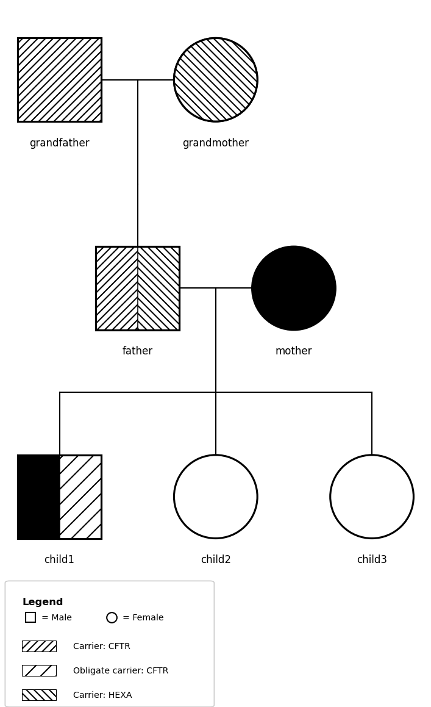
carrier_genes.ped: one cr_ column per gene. The father carries both CFTR and HEXA; child1 is affected and an obligate CFTR carrier.Carrier status comes from the carrier column and from any number of cr_ columns (one per gene or condition, e.g. cr_CFTR). Each is a separate carrier source, with its own pattern and legend row, and accepts:
| Value | Meaning |
|---|---|
0 | Not a carrier |
1 | Carrier (heterozygous) |
2 | Obligate carrier, as declared in the file (pypedigree does not infer it) |
-9, NA, empty | Unknown (cr_ columns only): no section, or a grey “NA” band |
family_id sample_id father mother sex pheno cr_CFTR cr_HEXA
FAM1 father 0 0 1 1 1 1
FAM1 mother 0 0 2 2 0 0
FAM1 son father mother 1 2 2 0
FAM1 daughter father mother 2 1 0 -9Use the carrier and obligate_carrier parameters of add_individual() for the carrier column, and cr_-prefixed keys in phenotypes for per-gene status:
from pypedigree import PedigreeBuilder
builder = PedigreeBuilder("FAM1")
builder.add_individual("father", sex="male", carrier=True)
builder.add_individual("mother", sex="female", phenotypes={"cr_CFTR": 1})
builder.add_individual("child", sex="female",
father="father", mother="mother",
obligate_carrier=True)
fig = builder.render(output="carriers.png")The pre-2022 notation stays available for the carrier column: PedigreeStyle(carrier_notation="legacy"), "carrier_notation": "legacy" in a style file, or --carrier-notation legacy on the command line. cr_ columns are still drawn as patterned sections. The radius of the legacy center dot is set by carrier_dot_radius (default 0.08).
Beyond sex, affection status, death, twins and carriers, pypedigree draws the other symbols of the NSGC nomenclature (Bennett et al., J Genet Couns 2008;17:424–33, and its 2022 revision centred on sex and gender) in the PNG and the interactive SVG, in both layouts. Each comes from one column, recognised by name in the header row.
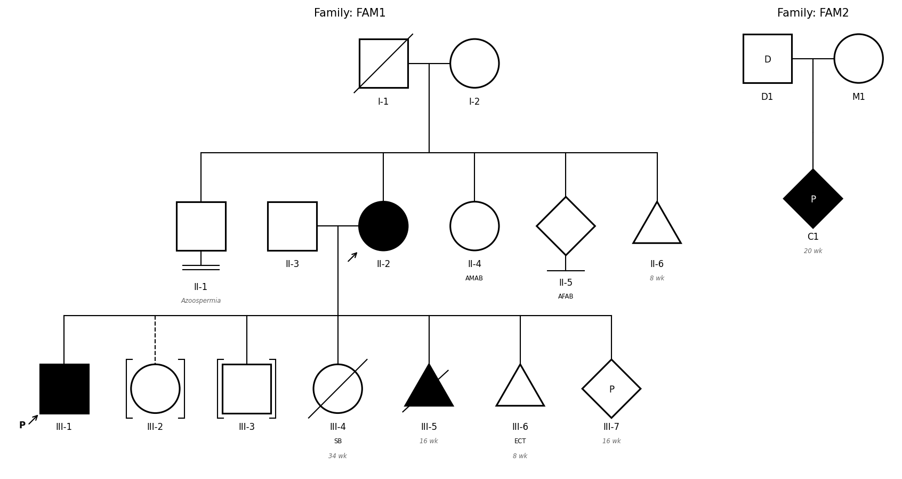
nomenclature.ped (family FAM1): infertility and childlessness by choice (II-1, II-5), the consultand (II-2), a transgender woman and a non-binary person (II-4, II-5), a miscarriage (II-6); children adopted in and out (III-2, III-3), a stillbirth, an affected termination, an ectopic pregnancy and an ongoing pregnancy (III-4 to III-7).Column names and codes are case-insensitive (aliases in brackets). 0, -9, NA, . or an empty cell mean nothing to note; any other value is an error naming the line.
| Column | Codes | Drawn as |
|---|---|---|
pregnancy (pregnancy_outcome, outcome) | P ongoing, SAB miscarriage, TOP termination, ECT ectopic, SB stillbirth | P: “P” inside the symbol. SAB, TOP, ECT: a triangle, filled when affected, struck through for a termination, “ECT” below. SB: the symbol struck through, “SB” below |
adopted (adoption) | in / 1 (parents given are adoptive), out / 2 (they are biological) | Brackets around the symbol; the line to adoptive parents is dashed |
childless (childlessness, infertility) | choice / 1, infertility / 2 | A line below the symbol ending in one bar (no children by choice or reason unknown), or two (infertility); choice:<ID> or infertility:<ID> for a couple without children, the marker hanging from the middle of their relationship line, its bars below the partners’ symbols (naming oneself is an error) |
art (assisted_reproduction) | D gamete donor, S surrogate (GC accepted) | “D” or “S” inside the symbol |
gender_identity (identity) | man, woman, nonbinary (also M/F/NB, 1/2/3) | The symbol follows the gender identity (square, circle, diamond); sex becomes the sex assigned at birth, written below as AMAB or AFAB when the two differ |
consultand | 1 | An arrow without “P” |
count (number) | 2 or more, or n | Several individuals in one symbol: the number written inside (cannot be a parent). A column of this name holding other values (0, 1, a decimal, text), or marking a parent, is read as a phenotype column, with a warning; the same for asymptomatic with values other than yes or no |
asymptomatic (presymptomatic) | 1 | Asymptomatic or presymptomatic carrier: a vertical line through the symbol, past its top and bottom, with a legend row; with phenotype_layout “auto” the figure is drawn with bands, not quadrants |
evaluated | 1, or a result (WGS: negative) | Documented evaluation, records reviewed: an asterisk at the lower right of the symbol (Bennett et al. 2022, Fig. 2); a result is written below, without the “E” the 2022 revision dropped |
gender column
A column named gender is the sex column, as before, unless the header also has a sex column: then it is the gender identity.
Gestational age, karyotype or the reason for infertility go in a_ annotation columns. Notes (“SB”, “ECT”, “AMAB”) are written under the ID label, before annotations. A pregnancy-loss triangle has no room for phenotype bands: in a figure with bands it takes the color of the individual's first band. The letter “P”, “D” or “S” stays at the centre of the symbol, on a white patch over bands or quadrants; a band’s text that would run into it moves to its right. The documented-evaluation asterisk keeps a gap of 0.3 of its size from the outline, whatever the scale.
builder.add_individual("c1", father="f", mother="m", pregnancy="SAB", annotations=["8 wk"])
builder.add_individual("c2", sex="male", father="f", mother="m", gender="woman", adopted="in")build_notation() turns the same codes into a Notation, the frozen dataclass attached to every Individual and NodeLayout.
NSGC numbers individuals by generation, in Roman numerals from the top, and by position from the left (I-1, II-3). --labels generation (style "labels": "generation") writes these numbers from the drawing instead of the IDs; --labels both writes the ID right under the number. A person drawn twice has one number; the unnamed parents pypedigree adds have none. The interactive SVG keeps the ID in the tooltip and data-id and adds data-number.
The diagonal lines that join a gamete donor or a surrogate to a pregnancy in the NSGC figures: in a pedigree file a donor is a parent and is joined to the other parent like any couple.
pypedigree can generate interactive SVG files with built-in tooltips, click-to-highlight, and zoom/pan capabilities. Interactive SVGs are self-contained HTML/SVG files that work in any modern browser with no additional dependencies.
css_class column and data_ columns (or the builder's css_class= and data=) add classes and data-* attributes to each individual's node, so a page can dim deselected members or outline QC-flagged ones with its own stylesheet (.node.flagged, [data-qc="high"]) without re-rendering. Names are validated; node, dimmed and pypedigree's own data-* names are reserved.The interactive SVG draws everything the PNG/PDF output draws: phenotype
bands (binary, gradient, diverging, categorical), o_ outline
colors, PGS distribution curves, a_ annotations, carrier notation
and the legend (hidden with --no-legend). Both renderers take
their decisions from the same code (pypedigree.phenotypes and
pypedigree.carriers), so the two outputs always agree. Several
families are drawn side by side, each with its title; in the PNG and PDF they share one scale, their first generations level.
For a page that embeds the SVG, each individual is a <g class="node"> with data-id, data-parents, data-children, data-siblings, and data-x, data-y (the centre of the symbol) and data-size (its size), in the coordinates of #main-group: an element appended inside that group at those coordinates stays on the node through zoom and pan, so a host can draw overlays (observed relatedness, links the pedigree does not show).
Each individual's tooltip also lists every value, for example
ID: 1 | Sex: Male | Phenotype: Affected | IQ: 90 | Dx: ASD.
The circular layout (--circular) is not available in interactive
mode.
The SVG can be put in an HTML page (as innerHTML or in a template) or in an HTML report that is printed, next to other SVGs. Its root has the class pypedigree, its CSS only applies under that class, and its script only acts on its own figure (document.currentScript.closest('svg')), with no listener on the window.
id_prefix (--id-prefix) — prepended to every id and every reference to one, so two figures on a page share no id. The default, empty, keeps main-group, tooltip…responsive=True (--responsive) — width="100%" and no height: the figure fills its container's width, with the proportions of its viewBox.render_svg() (--interactive --no-script) — no script, no tooltip group, for print or for a page that adds its own behaviour. Scripts inserted through innerHTML do not run anyway.from pypedigree import render_interactive_svg, render_svg
on_page = render_interactive_svg(ped, id_prefix="fam-a-", responsive=True)
in_report = render_svg(ped, id_prefix="report-fam-a-", responsive=True)Use the --interactive flag to generate an interactive SVG instead of a static image:
pypedigree family.ped --interactive -o pedigree.svg
# For a web page or a printed report: no script, unique ids, fluid width
pypedigree family.ped --interactive --no-script --id-prefix fam1- --responsive -o pedigree.svg--interactive flag automatically produces SVG output. If the output path has a different extension, it will be overridden to .svg.
render_interactive_svg(pedigree, ...)Render all families in a pedigree as an interactive SVG. Returns the SVG markup as a string.
from pypedigree import parse_pedigree, render_interactive_svg
ped = parse_pedigree("family.ped")
svg_str = render_interactive_svg(ped, output="interactive.svg")PedigreeBuilder.render_interactive_svg(output=None, *, style=None, show_labels=True, show_legend=True, id_prefix="", responsive=False)Build and render as an interactive SVG from the builder API:
from pypedigree import PedigreeBuilder
builder = PedigreeBuilder("FAM1")
builder.add_individual("father", sex="male")
builder.add_individual("mother", sex="female")
builder.add_individual("child", sex="male",
father="father", mother="mother",
phenotype="affected")
svg_str = builder.render_interactive_svg(output="interactive.svg")All visual parameters are controlled through the PedigreeStyle dataclass. Styles can be set in Python or loaded from a JSON file via --style.
| Parameter | Type | Default | Description |
|---|---|---|---|
shape_size | float | 0.8 | Individual shape side length |
shape_line_width | float | 1.5 | Shape outline width |
fill_color | str | "black" | Affected individual fill color |
outline_color | str | "black" | Shape and marker outline color |
phantom_line_style | str | "--" | Line style for phantom parents |
line_color | str | "black" | Connection line color |
line_width | float | 1.0 | Connection line width |
double_line_gap | float | 0.06 | Gap between consanguinity double lines |
font_size | float | 8.0 | Label and text font size, in points. The legend panel is sized from it (text, swatches and row height), so raise it to keep a figure legible once scaled down for print |
min_font_size | float | None | None | Smallest size of any text, in points (e.g. 6, a common journal rule). Notes, annotations, band and quadrant text, “NA”, “PGS” captions and the legend, drawn at fractions of font_size, are raised to it; the layout and the legend make room. PedigreeStyle.text_size(scale) gives the size of any text |
text_scale | float | 1.0 | How many times larger text and marks sized in points (labels, markers, the evaluation asterisk, PGS boxes and values) are, relative to the symbols, than by default. Set it when you draw a pedigree into axes of your own, smaller than pypedigree's own figures, so the layout keeps room for them: 2.0 for a drawing half as large. The SVG draws text and lines at that scale |
font_family | str | "sans-serif" | Font family for all text |
label_offset | float | 0.15 | Distance below shape for label |
generation_gap | float | 2.0 | Vertical spacing between generations |
sibling_gap | float | 1.5 | Horizontal spacing between siblings (more where long labels need it) |
couple_gap | float | 1.5 | Horizontal spacing between partners (more where long labels need it) |
phenotype_colors | dict | {} | Phenotype name → hex color mapping |
dpi | int | 150 | Output resolution |
fig_width | float | 10.0 | Width a small pedigree is drawn to fill (inches); the figure is then fitted to the drawing |
fig_height | float | 8.0 | Height a small pedigree is drawn to fill (inches); the figure is then fitted to the drawing |
margin | float | 0.5 | Figure margin (inches) |
carrier_notation | str | "nsgc2022" | "nsgc2022": patterned sections, one per carrier result (Bennett et al. 2022). "legacy": half-filled shape and center dot |
carrier_dot_radius | float | 0.08 | Radius of the center dot for obligate carriers (legacy notation) |
show_phenotype_labels | bool | False | Show YES/NO text inside binary phenotype bands |
phenotype_layout | str | "auto" | "auto" (quadrants for two to four phenotype or carrier sources, the whole symbol for one, bands beyond), "quadrants" (the same, with a warning when it falls back) or "bands" (one band per column) |
phenotype_quadrants | dict | {} | Column name → "top-left", "top-right", "bottom-left" or "bottom-right"; other columns take their conventional or the next free quadrant |
show_na_labels | bool | True | Write “NA” in bands with no data; when false they stay grey with no text, like an “unknown” band |
band_text | str | "auto" | Text in bands and quadrants. "auto": “name: value”, or the value alone, or the value smaller (down to min_font_size, or half font_size), whichever fits the symbol at that height; else none. "name_value": always “name: value” (before 0.7.0). "value": the value alone. "none": no value |
pgs_scale | str | "zscore" | "zscore" (default since 0.10.0), "minmax" (raw scores) or "percentile": how a PGS value is placed on its curve |
phenotype_labels | dict | {} | Name shown for a column, e.g. {"SRS": "SRS T-score"}: legend, quadrant key, band text, tooltips. Others show their name with underscores as spaces |
legend | str | "auto" | "compact": with quadrants, one shared Affected / Unaffected / Unknown row for the binary columns of the key; "full": one row per column; "auto": compact with quadrants, full with bands; "minimal": compact, no title, no sex symbols, spacing 0.7 (unless set), a one-symbol key whose binary columns are read from a caption under it |
legend_title | str | None | "Legend" | The legend’s title; null or "" for none |
legend_sex_symbols | bool | True | The “= Male / = Female” row; false drops it |
legend_max_width | float | str | None | None | Widest the legend may be, in cm (8.5) or with a unit ("85mm", "3.3in"); the PGS row grows up to it before wrapping. Unset: the PGS row wraps where the widest other row ends, its score key on the lines below the caption |
legend_text | dict | {} | The legend’s fixed wording by role (key_note, shared_binary, affected, unaffected, unknown, pgs, ptdt, male, female, low, high, not_applicable; beside the PGS icon pgs_high, pgs_low, pgs_plus_2sd, pgs_minus_2sd), e.g. for British spelling or another language |
legend_bar_width | str | "equal" | "equal": every gradient and binned bar as wide as the widest; "own": each its own width |
legend_spacing | float | 1.0 | Factor on the legend’s row height and gaps, 0.6 to 3 (e.g. 0.7 for print); the figure is as much shorter |
show_pgs_values | bool | False | Write each PGS value beside its marker, in its color, left of the curve (“+2.1”, the percentile, or the value); the layout makes room |
pgs_colors | dict | {} | Map of PGS column name to hex color for marker line (e.g. {"PGS_autism": "#3498db"}). Unset: #e74c3c for a single PGS column; with several, distinct colors |
curve_reference | dict | {} | A curve column's population mean and SD, e.g. {"IQ": {"mean": 100, "sd": 15}}: z = (value − mean) / SD, the value written as it is. Without it, values are z-scores |
curve_captions | dict | {} | Caption of a curve column's box (default “PGS”, “pTDT” or the column's name); columns with one caption share a box |
gradient_range | dict | {} | Custom min/max for gradient normalization (e.g. {"SRS": [40, 90]}); the legend writes these ends instead of Low / High |
gradient_bins | dict | {} | Clinical thresholds: column → ascending cut-offs (e.g. {"SRS": [60, 66, 76], "IQ": [70]}). The band takes one of the steps of the column’s color (a gi_ column the other way) and the legend shows each step with its limits (“< 60”, “60–65”, “66–75”, “≥ 76”) |
gradient_bin_label_position | str | dict | "below" | Where the legend writes the step names: "below" the limits, or "inside" the colored steps (the limits stay under the bar); for all columns or by column |
gradient_bin_labels | dict | {} | Names of the steps of gradient_bins, one per step from the lowest up (e.g. {"SRS": [null, "mild", "moderate", "severe"]}, null for an unnamed step); written under the limits in the legend and given in the tooltip |
gradient_diverging | dict | {} | Tricolor diverging gradient config (e.g. {"IQ": {"min": 40, "mid": 100, "max": 160, "color_low": "#e74c3c", "color_high": "#2ecc71"}}) |
zero_pad_ids | int | 0 | Zero-pad individual IDs to this width (0 = no padding, 3 = "001") |
pgs_transmission | bool | false | Compute each child’s pTDT deviation, (child − mid-parent) / ptdt_midparent_sd, from its parents’ PGS_* columns, into pTDT_* columns |
ptdt_midparent_sd | float | 0.7071 | SD(mid-parent) for pgs_transmission: √½ for standardised scores and unrelated parents |
sibling_order | str | "auto" | Order of siblings: "auto" by date of birth, then file order, a child leading to a loop moved to the end of the sibship facing the other branch; "birth" that order strictly, loops drawn with a duplicate instead |
loops | str | "duplicate" | A loop whose stretched sibship line would overlap another: "duplicate" draws one partner twice, joined by a dotted line; "cross" draws them once, overlapping sibship lines at different heights, each horizontal line hopping over the vertical lines it crosses |
hop_radius | float | 0.1 | Radius of a hop (layout units), with loops "cross" |
labels | str | "id" | What labels a symbol: "id", "generation" (NSGC number from the drawing, "II-3"; a person drawn twice has one number; the circular layout has the hierarchical layout’s numbers) or "both" (the ID under the number). The interactive SVG keeps the ID in the tooltip and data-id, and adds data-number |
radial_gap | float | 2.5 | Radial spacing between concentric rings (circular layout) |
base_radius | float | 3.0 | Radius of first generation ring (circular layout) |
{
"shape_size": 1.0,
"font_size": 10,
"outline_color": "#888888",
"generation_gap": 2.5,
"dpi": 300,
"phenotype_colors": {
"epilepsy": "#e74c3c",
"IQ": "#3498db"
},
"pgs_colors": {
"PGS_autism": "#3498db",
"PGS_IQ": "#e74c3c",
"PGS_ADHD": "#e67e22"
},
"gradient_range": {
"SRS": [40, 90]
},
"gradient_diverging": {
"IQ": {
"min": 40, "mid": 100, "max": 160,
"color_low": "#e74c3c", "color_high": "#2ecc71"
}
},
"zero_pad_ids": 3
}For large pedigrees, the figure size is automatically scaled based on the layout bounds. The fig_width and fig_height values serve as minimums; actual dimensions grow with the number of individuals and generations. The pedigree is drawn at that scale, then the figure is fitted to the drawing: the same small margin (10 pt) on every side of the pedigree, labels and annotations included, the legend right under it, families side by side packed close, and the figure as wide as the pedigree or the legend, whichever is wider. A pedigree drawn into your own ax leaves your figure and axes as they are.
Pedigree files saved by the CanRisk tool (BOADICEA model; formats 1 to 4, first line ##CanRisk 4.0) are read directly, from the CLI, parse_pedigree(), parse_pedigree_from_string() and the web app. A file may hold several families. Columns are read by the names of the ##FamID line.
MZtwin), deaths, year of birth. Name is left out (often a real name); with --canrisk-names (parse_pedigree(..., canrisk_names=True)) it labels each person instead of IndivID, where given and unique in the family, for example and teaching pedigrees.S, or a direct test, T: “BRCA1 + (direct test)”, “BRCA2, PALB2, ATM, CHEK2, BARD1 − (search)”, “HOXB13 + (het, direct test)”), breast pathology (“ER+ PR+ HER2−”), “Ashkenazi Jewish”.##PRS_BC, ##PRS_OC, ##PRS_PC give the target’s z-score, drawn on the z-score scale. They belong to the family whose rows follow them: when one header block holds several families with a target, only the first gets them, with a warning.Other header keys (menarche, parity, BMI…) are ignored. A value CanRisk does not allow raises PedigreeParseError naming the line. CanRisk files are read, not written.
As the CanRisk services read them, fields are separated by any run of tabs or spaces (a row mixing them, or ending in a tab, is read), and a file without a ##FamID column line is read by position, with the columns of its format (28 in format 4, 27 in formats 2 and 3, 26 in format 1).
A Phenopackets v2 JSON file, a whole Family or a bare Pedigree ({"persons": [...]}), is read by the CLI, parse_pedigree(), parse_pedigree_from_string() and the web app: family, IDs, parents, sex (MALE, FEMALE, UNKNOWN_SEX, OTHER_SEX), affectedStatus (AFFECTED, UNAFFECTED, MISSING), the proband (proband.subject.id) and deaths (vitalStatus). camelCase and snake_case names, fields left at their default and enum numbers (Phenopackets numbering: FEMALE = 1, MALE = 2) are accepted. With consanguinousParents, the proband’s parents are drawn with a double line, with a warning when the pedigree holds none of their common ancestors. When the proband has exactly one disease (diseases[].term, not excluded), the affected status is also a binary column named after it, so the legend names the condition. With --hpo-features (parse_pedigree(..., phenopacket_features=True)), each HPO term of the phenopackets’ phenotypicFeatures is a binary column named by its label: observed, excluded (unaffected), not recorded in a phenopacket (unknown), no phenopacket (no data).
export_phenopacket_pedigree(pedigree, path) writes a Pedigree message, without duplicates. A parent named in the input but with no row of their own is written as a person (sex from their role, MISSING), so every paternalId and maternalId has its person.
pypedigree provides native support for PLINK bioinformatics file formats, enabling seamless interoperability with tools like PLINK, KING, GCTA, and other genetics software.
PLINK .fam files use the standard 6-column pedigree format (FID, IID, PAT, MAT, SEX, PHENO), whitespace-delimited, with no header row. Files with the .fam extension are auto-detected by the CLI.
# Python API
from pypedigree import parse_fam_file, render_pedigree
ped = parse_fam_file("family.fam")
render_pedigree(ped, output="family.png")
# CLI — .fam extension is auto-detected
# pypedigree family.fam -o family.pngPLINK .ped files have 6 standard columns followed by genotype data (pairs of alleles). Use parse_plink_ped() or the --plink CLI flag to read only the pedigree columns and ignore genotype data.
# Python API
from pypedigree import parse_plink_ped
ped = parse_plink_ped("family.ped")
# CLI — use --plink flag
# pypedigree family.ped --plink -o family.pngExport a Pedigree to PLINK .fam format for use with external tools. Internal constructs (phantom parents, duplicate nodes) are automatically excluded, and references are resolved back to original IDs.
from pypedigree import parse_pedigree, export_fam
ped = parse_pedigree("family.ped")
export_fam(ped, "output.fam") # Ready for PLINK/KINGFrom the command line: pypedigree family.ped --export family.fam (or family.json for a GA4GH Phenopackets Pedigree); alone, nothing is drawn, with -o the figure is drawn too.
What the writers keep. Both writers keep the six PED fields only: family, ID, father, mother, sex and affected status. Deceased and proband flags, twins, date of birth, the NSGC notation, carrier, phenotype, PGS and annotation columns are left out, as neither format has a place for them. Reading the file back gives the same people and family structure, drawn without those marks; a row standing for several people (count) is left out with a warning. To keep everything, keep the original file.
| Function | Description |
|---|---|
parse_fam_file(path) | Parse a PLINK .fam file (6 columns, no header) |
parse_plink_ped(path) | Parse a PLINK .ped file (ignores genotype columns) |
export_fam(pedigree, path) | Export to .fam format (tab-delimited, 6 columns) |
The layout engine computes (x, y) coordinates for all individuals and connection lines. It has no matplotlib dependency and produces pure numeric FamilyLayout objects.
font_size, long annotations), those two are moved apart by the room their labels need, measured with the character widths of DejaVu Sans at the SVG's scale; labels that fit change nothing.sibling_gap apart (couple_gap between partners), and further when their labels need it, and the sibship lines of two different couples never overlap, so every child can be traced to its parents. The test suite checks both on every fixture and on generated pedigrees of up to 200 individuals, with and without loops. The same rules apply at every size.
| Pedigree Size | Layout Time | Notes |
|---|---|---|
| 9 individuals | < 1ms | Typical clinical pedigree |
| 45 individuals | < 1ms | Extended family |
| 100 individuals | ≈ 1ms | Including loop breaking |
| 200 individuals | ≈ 2ms | Large research pedigree |
| 500 individuals | ≈ 5ms | Densely interbred, many loops |
| Symbol | Meaning |
|---|---|
| Square □ | Male |
| Circle ○ | Female |
| Diamond ◇ | Unknown sex |
| Filled shape | Affected |
| Empty shape | Unaffected |
| Diagonal line through shape | Deceased |
| Arrow with a “P” at the lower left | Proband (index case). The arrow and the “P” are sized from the font, so they keep their shape however small the pedigree is drawn. With tight spacing or large text, the individual on the left is moved just far enough that the “P” does not run into their label; with a PGS curve, the curve's “PGS” caption moves above it |
| Double horizontal line | Consanguineous union |
| Broken horizontal line | Dissolved/broken union |
| Patterned section | Carrier, one pattern per carrier source (NSGC 2022) |
| Sparser pattern | Obligate carrier (NSGC 2022) |
| Half-filled shape / center dot | Carrier / obligate carrier (legacy notation) |
| Dashed shape outline | Phantom (inferred) parent |
| Horizontal bar between twins | Monozygotic twins |
| V-lines from descent line | Dizygotic twins |
SexPhenotypePhenotypeDisplayModeb_ prefix).g_ prefix).o_ prefix).c_ prefix).ONGOING ("P"), MISCARRIAGE ("SAB"), TERMINATION ("TOP"), ECTOPIC ("ECT"), STILLBIRTH ("SB").IN, OUT.BY_CHOICE, INFERTILITY.DONOR ("D"), SURROGATE ("S").MAN, WOMAN, NONBINARY: decides the symbol.They are grouped in Notation (pregnancy, adoption, childlessness, reproductive_role, gender, is_consultand), the notation field of Individual and NodeLayout. NodeLayout also carries notes (text written under the label) and marker_depth (room taken by a childlessness marker); EdgeType.CHILDLESS marks that marker's segments.
TwinTypeIndividualRepresents one person in the pedigree.
carrier column.carrier column.UnionRepresents a mating relationship between two individuals.
FamilyA collection of related individuals and their unions.
PedigreeTop-level container holding one or more families.
render_pedigree(ped.subset(["FAM1"])) draws one family with its bands, PGS curves and legend. KeyError for an unknown ID.source, or the pedigree itself. Each column's mode, category colors and carrier legend are decided over its individuals, as values are normalised over the whole file, so a subset is drawn as in the figure of the whole file.FamilyLayoutComplete layout result for one family.
waypoints: the route above their row; empty in the circular layout, drawn as a curve).NodeLayoutEdgeLayout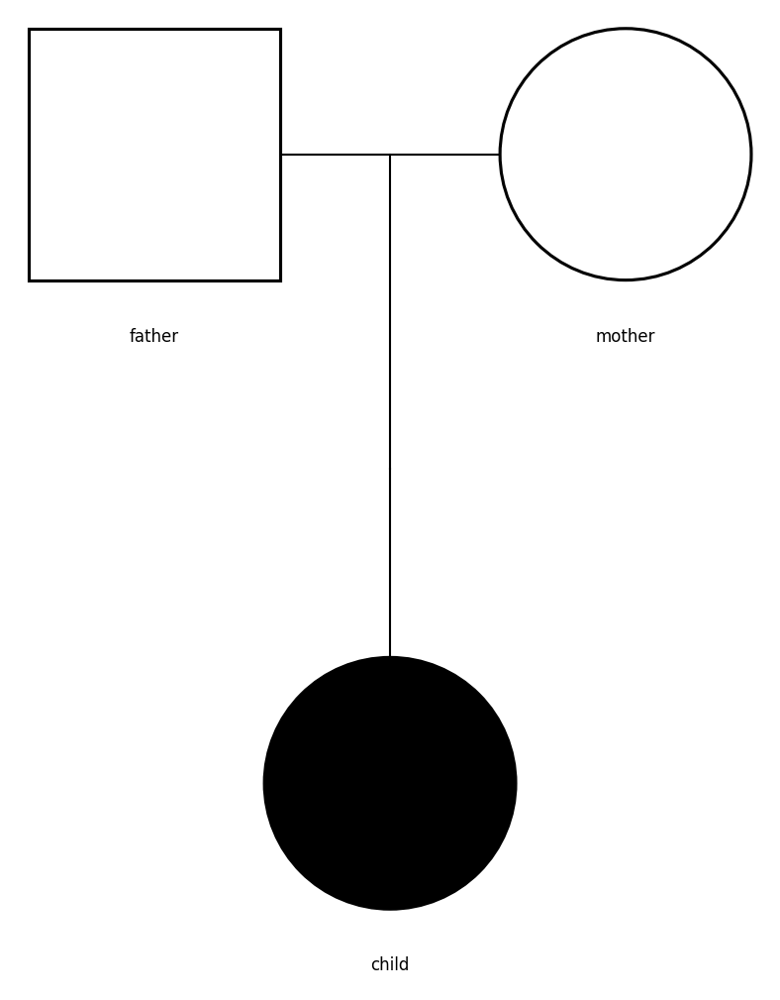
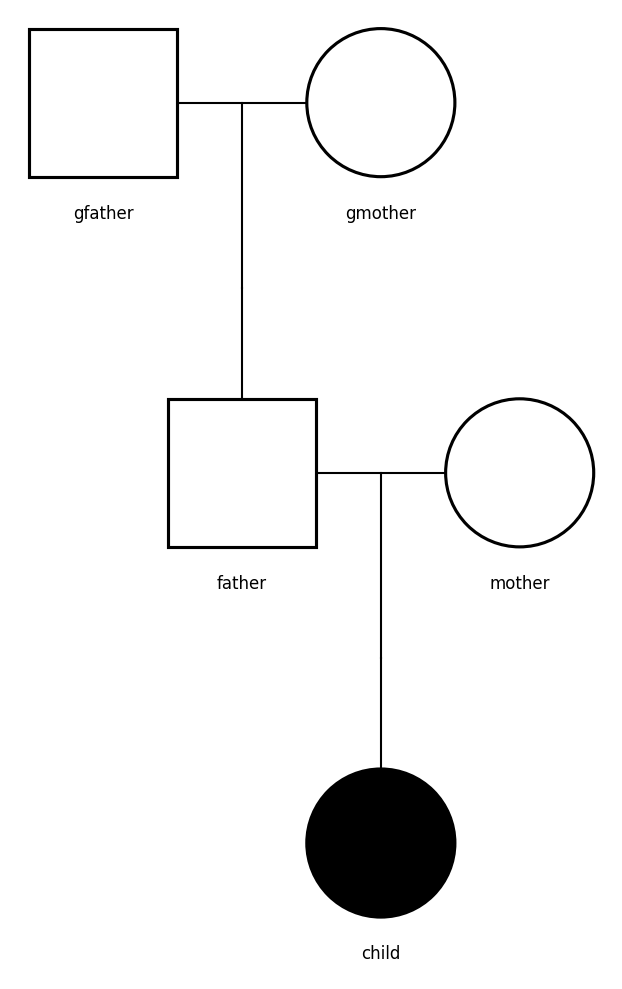
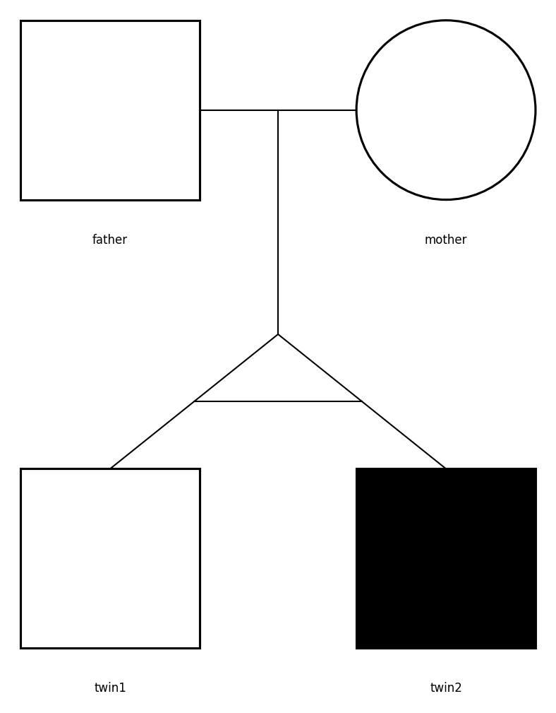
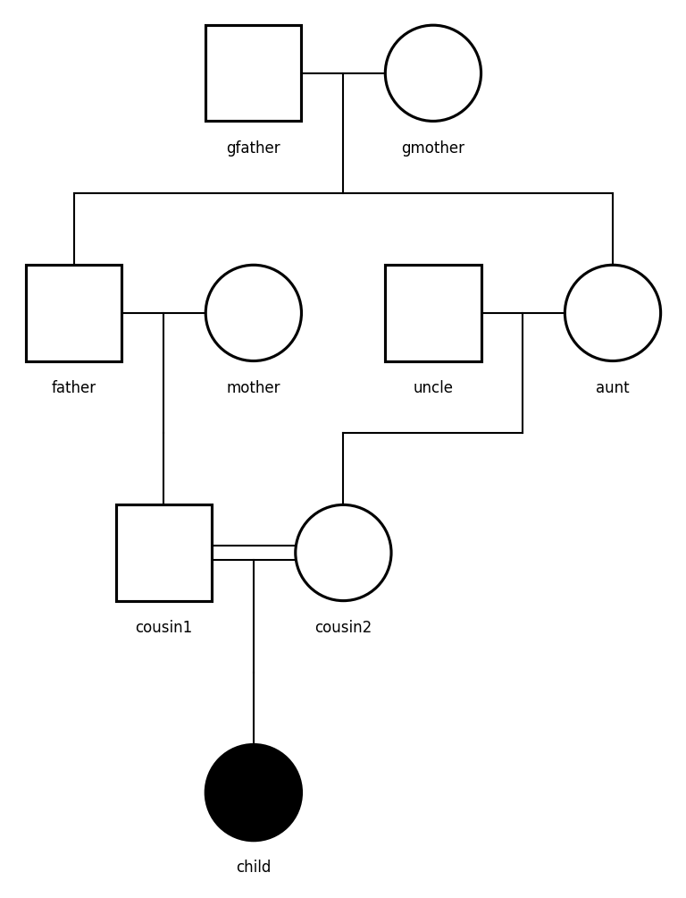
nomenclature.ped)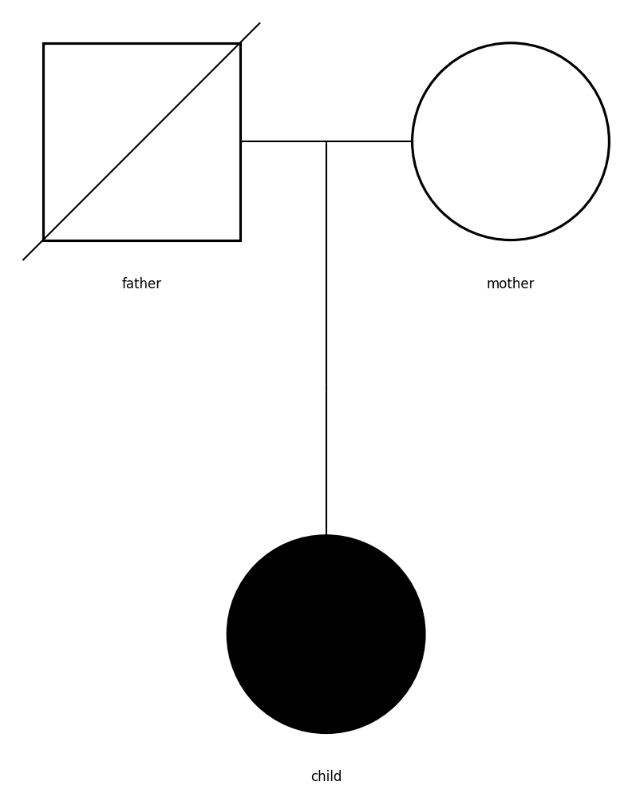
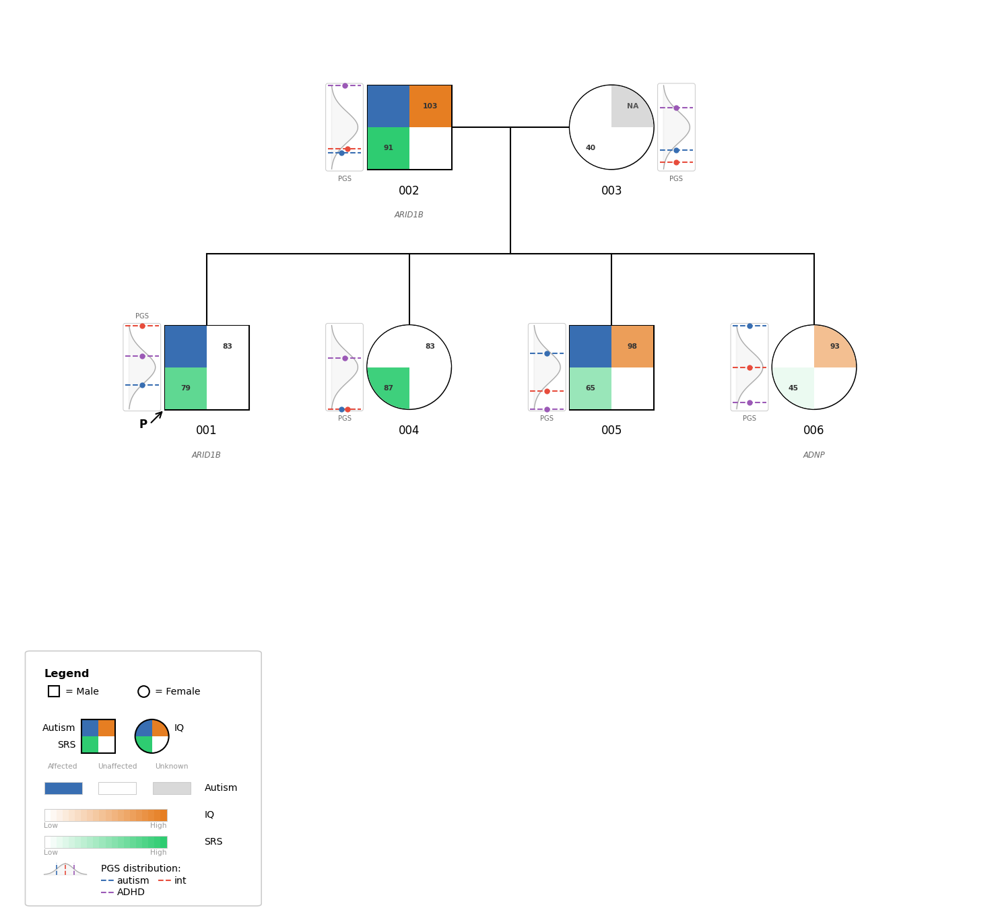
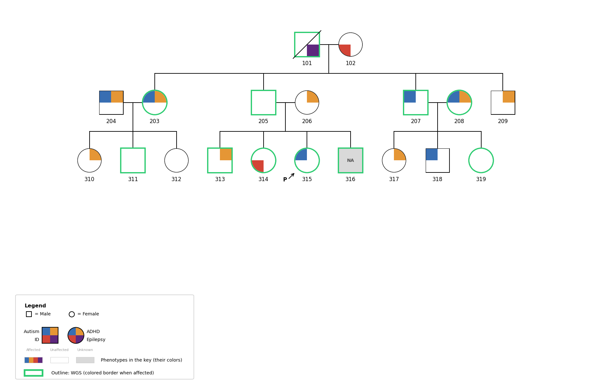
quadrants.ped (synthetic), --phenotype-layout quadrants: autism top left (blue), ADHD top right (yellow), intellectual disability bottom left (red), epilepsy bottom right (purple), and a green outline for sequenced individuals. 316 has no data at all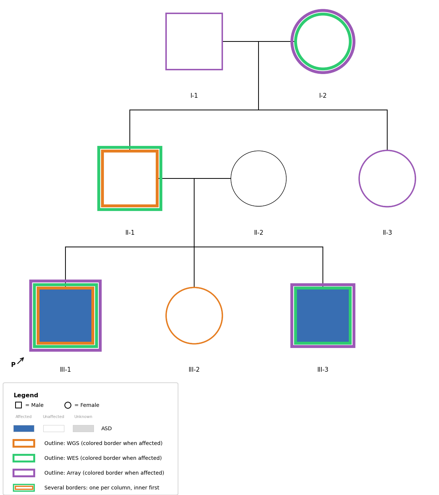
outline_rings.ped (synthetic): which data each individual has, in three outline columns (o_WGS, o_WES, o_Array). One border per column an individual is affected in, the first on the outline, the others around it in column order: III-1 has the three, inner orange for WGS. The legend explains it; the SVG tooltip lists them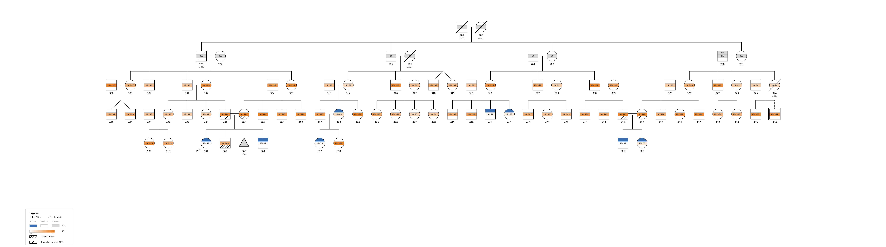
multigenerational.ped (synthetic): a first-cousin marriage (401 × 406) and a marriage between two branches (412 × 429), both drawn side by side with no duplicated individual, because each sibship is ordered so the branches of a loop meet. Binary, gradient and carrier bands (drawn with --phenotype-layout bands), both kinds of twins, deceased individuals, a miscarriage and an adoption. Open it with --interactive to zoom in.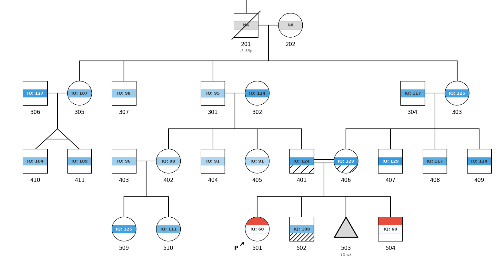
All pypedigree exceptions inherit from PedigreeError:
| Exception | When |
|---|---|
PedigreeParseError | File parsing failures (bad format, missing columns, invalid values) |
PedigreeValidationError | Data validation failures (duplicate IDs, circular references, sex mismatches) |
PedigreeLayoutError | Layout computation failures |
PedigreeBatchError | render_families(): some families could not be drawn, the others were (.written, .failures) |
from pypedigree import parse_pedigree, PedigreeParseError
try:
ped = parse_pedigree("invalid.ped")
except PedigreeParseError as e:
print(f"Parse error: {e}")Every color in a style is checked before drawing starts, and all offending
values are reported together as a PedigreeError naming the option
each came from:
PedigreeError: Invalid color(s) in style: outline_color = '#12345';
phenotype_colors['Epilepsy'] = '#zzzzzz'. Expected hex values like
'#e74c3c' or named colors like 'grey'.Non-fatal diagnostics use dedicated categories, so they can be filtered or escalated independently of other libraries' warnings.
| Warning | Parent | When emitted |
|---|---|---|
PedigreeWarning | UserWarning | Base class for all pypedigree warnings |
PedigreeStyleWarning | PedigreeWarning | A style definition contains something unusable, e.g. an unknown option |
PedigreeDataWarning | PedigreeWarning | Pedigree data is questionable but still renderable, e.g. a father recorded as female |
import warnings
from pypedigree import PedigreeDataWarning, parse_pedigree
# Treat questionable data as a hard failure
warnings.simplefilter("error", PedigreeDataWarning)
ped = parse_pedigree("family.ped")An unknown key in a style file is ignored, but reported with a suggested spelling — silently dropping a typo is indistinguishable from the option having no effect:
PedigreeStyleWarning: Unknown style option 'phenotype_color' ignored;
did you mean 'phenotype_colors'?The CLI captures all of these and prints them as
Warning: <message> on stderr.